Légendes du Club
Portrait des joueurs emblématiques
Depuis sa création, l'ASSE a vu émerger des joueurs légendaires qui ont marqué son histoire par leur talent, leur charisme et leur dévouement. Ces figures emblématiques sont devenues des symboles du club.
Michel Platini
Michel Platini, l’un des plus grands joueurs français, a évolué à l’ASSE entre 1979 et 1982. Bien que son passage ait été court,
il a laissé une empreinte indélébile en menant le club à son dernier titre de champion de France en 1981. Son élégance et sa vision du jeu étaient uniques.
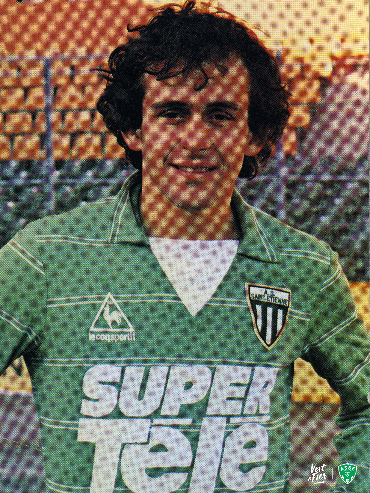
Michel Platini, architecte du titre de 1981 (Source : archives ASSE).
Dominique Rocheteau
Surnommé "l’Ange Vert", Dominique Rocheteau est l’un des joueurs les plus aimés de l’histoire de l’ASSE. Entre 1972 et 1980, il a illuminé le terrain par sa technique et son sens du but, notamment lors de l’épopée européenne de 1976.
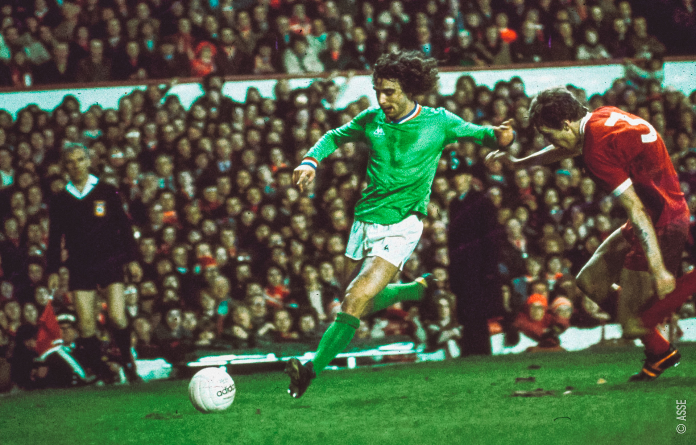
Dominique Rocheteau, héros de l’épopée de 1976 (Source : archives nationales).
Hervé Revelli
Meilleur buteur de l’histoire de l’ASSE, Hervé Revelli a inscrit 211 buts sous le maillot vert. Entre 1966 et 1978, il a été l’un des piliers de l’équipe durant son âge d’or, contribuant aux multiples titres nationaux.
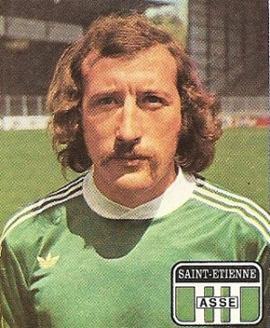
Hervé Revelli, légende des "Verts" et meilleur buteur du club (Source : RetroFoot).
Rachid Mekhloufi
Figure emblématique des années 1950 et 1960, Rachid Mekhloufi a été un joueur clé lors des premiers titres de l’ASSE. Son élégance sur le terrain et son leadership en ont fait une icône du football français.
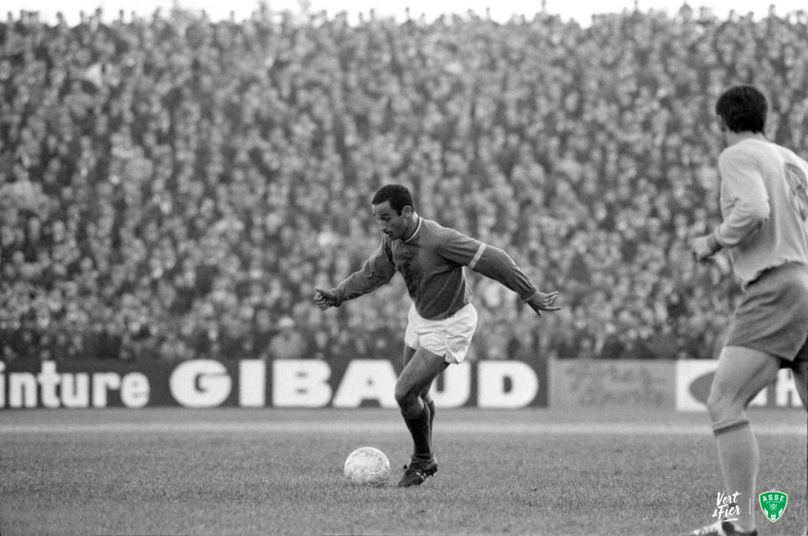
Rachid Mekhloufi, leader des premiers succès de l’ASSE (Source : archives locales).
Ivan Curkovic
Le gardien légendaire des "Verts", Ivan Curkovic, a marqué l’histoire de l’ASSE entre 1972 et 1981. Il était connu pour ses arrêts décisifs,
notamment lors des grandes soirées européennes.
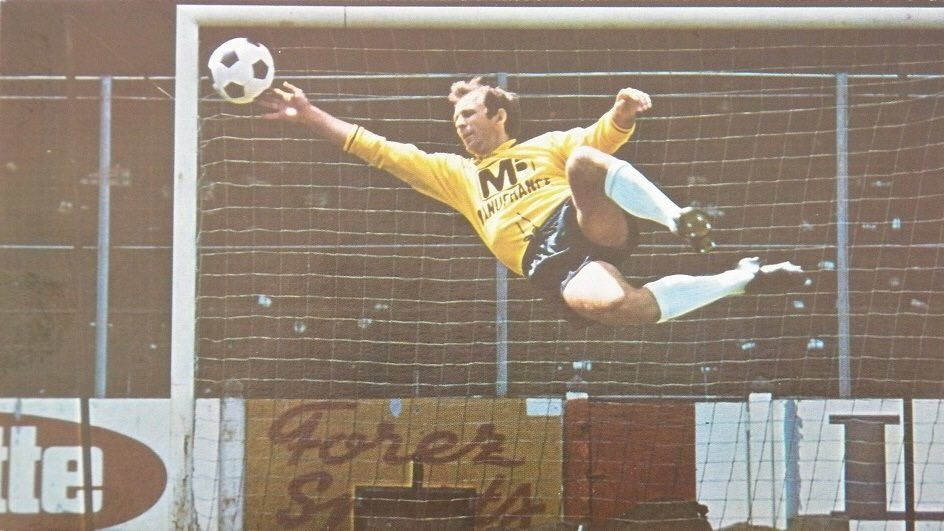
Ivan Curkovic, rempart des "Verts" durant l’épopée européenne (Source : archives UEFA).
Les entraîneurs historiques
Tout au long de son histoire, l’ASSE a été guidée par des entraîneurs visionnaires et charismatiques qui ont marqué l’âme du club et bâti ses succès. Ces hommes sont devenus des figures incontournables de la légende des "Verts".
Jean Snella
Considéré comme l'un des premiers architectes des succès de l’ASSE, Jean Snella a marqué les années 1950 et 1960.
Sous sa direction, le club remporte son premier championnat en 1957. Il est connu pour son exigence tactique et son sens du collectif.
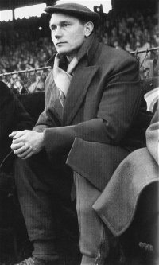
Jean Snella, un pionnier dans l’histoire de l’ASSE (Source : archives ASSE).
Albert Batteux
Après avoir mené Reims à plusieurs succès, Albert Batteux rejoint l’ASSE en 1967. Sous sa houlette, le club connaît une domination inégalée en France, remportant trois championnats consécutifs (1967-1970) et une Coupe de France en 1970. Il est reconnu pour sa gestion humaine et son flair tactique.
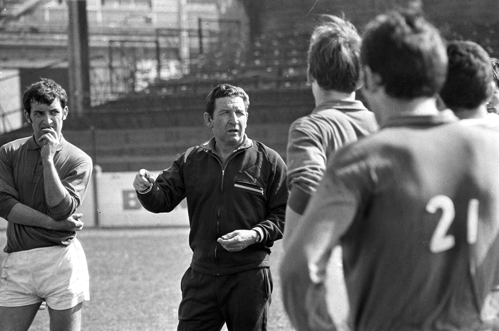
Albert Batteux, entraîneur des années de domination (Source : archives nationales).
Robert Herbin
Surnommé "Le Sphinx", Robert Herbin est sans doute l’entraîneur le plus emblématique de l’histoire de l’ASSE. De 1972 à 1983, il mène le club à quatre championnats, deux Coupes de France, et une finale européenne en 1976. Son approche tactique et son calme légendaire ont marqué les joueurs et les supporters.
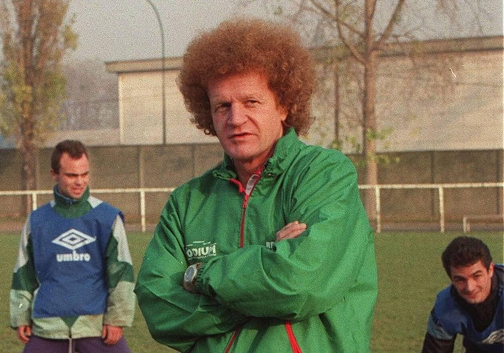
Robert Herbin, l’entraîneur de l’âge d’or (Source : archives ASSE).
Frédéric Antonetti
Antonetti a joué un rôle clé dans la renaissance du club. Il guide l’ASSE lors de son retour en Ligue 1 en 2004, ramenant de la fierté et de la compétitivité à une équipe en quête de renouveau.
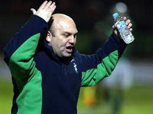
Frédéric Antonetti, entraîneur du retour en Ligue 1 (Source : archives locales).
Palmarès et moments de gloire associés
L’histoire de l’ASSE est ponctuée de succès mémorables. Son palmarès impressionnant témoigne du talent et de la détermination des légendes qui ont marqué l’histoire du club.
Les dix titres de champions de France
Entre 1957 et 1981, l'ASSE a remporté dix titres de champion de France, un record à l’époque. Ces succès sont le fruit du travail de joueurs légendaires comme Hervé Revelli, Dominique Rocheteau, et Michel Platini, sous la direction d’entraîneurs visionnaires tels que Jean Snella et Robert Herbin.
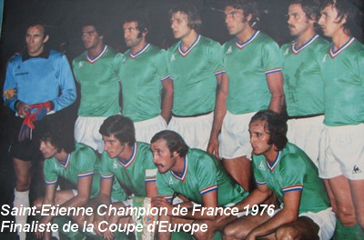
L’équipe victorieuse du championnat de 1976, une des périodes les plus glorieuses (Source : archives ASSE).
Les six Coupes de France
Les "Verts" ont remporté la Coupe de France à six reprises, avec des victoires mémorables comme celle de 1977, menée par Dominique Rocheteau. Ces trophées symbolisent l’esprit de combativité du club.
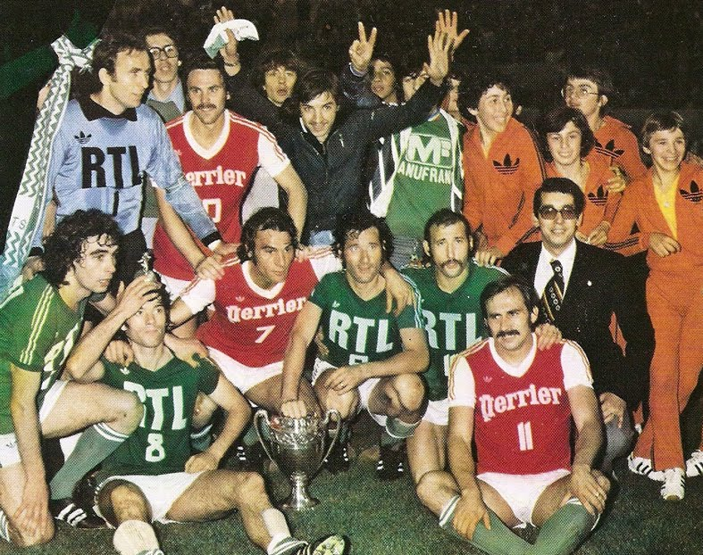
Les joueurs de l'ASSE brandissant la Coupe de France en 1977 (Source : archives nationales).
L’épopée européenne de 1976
L’aventure de l’ASSE en Coupe d'Europe des Clubs Champions reste un moment clé de son histoire. Malgré la défaite contre le Bayern Munich en finale, les fameux "poteaux carrés" de Glasgow sont devenus un symbole de courage et de ténacité.
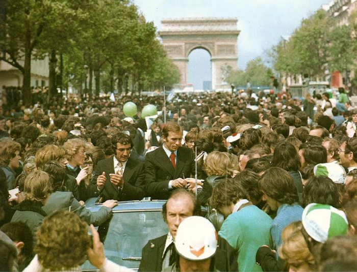
Les "Verts" acclamés à leur retour de Glasgow en 1976 (Source : archives UEFA).
La Coupe de la Ligue 2013
Après des années difficiles, l’ASSE renoue avec le succès en remportant la Coupe de la Ligue en 2013 face à Rennes. Ce trophée marque la renaissance du club, porté par des joueurs comme Brandão et Loïc Perrin.
 Les joueurs de l’ASSE célébrant leur victoire en Coupe de la Ligue 2013 (Source : archives ASSE).
Les joueurs de l’ASSE célébrant leur victoire en Coupe de la Ligue 2013 (Source : archives ASSE).
Citations et anecdotes célèbres
L’histoire de l’ASSE regorge de citations inspirantes et d’anecdotes marquantes qui capturent l’essence du club. Ces moments, souvent liés à des joueurs, entraîneurs ou supporters, illustrent la passion et la grandeur des "Verts".
Les "poteaux carrés" de Glasgow (1976)
L’une des anecdotes les plus célèbres reste celle des "poteaux carrés" lors de la finale européenne de 1976 contre le Bayern Munich.
Dominique Bathenay, à propos de ce moment, déclarait : "On n’a pas perdu, c’est juste que la chance était ailleurs ce jour-là."
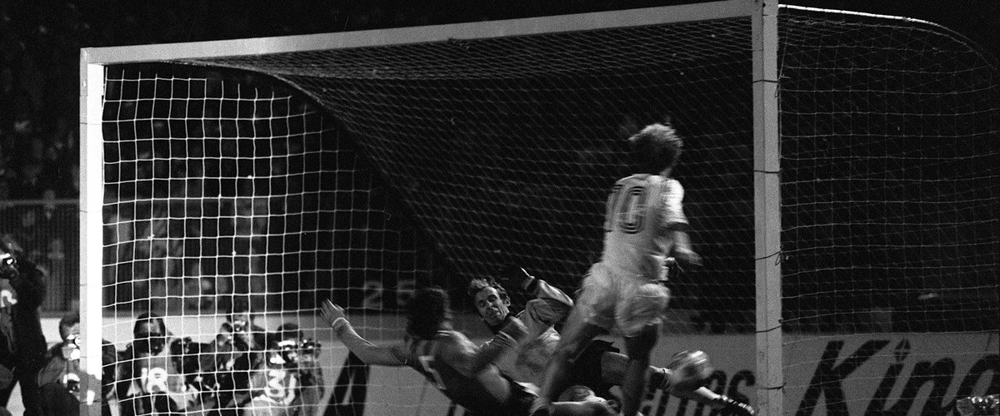
Les fameux poteaux carrés de Glasgow, symbole de courage et de malchance (Source : archives UEFA).
Dominique Rocheteau, "l’Ange Vert"
En 1975, alors que Dominique Rocheteau était surnommé "l’Ange Vert" pour sa grâce et sa technique, il déclara : "Le vert n’est pas seulement une couleur, c’est une philosophie." Ce surnom est resté gravé dans l’histoire du club.
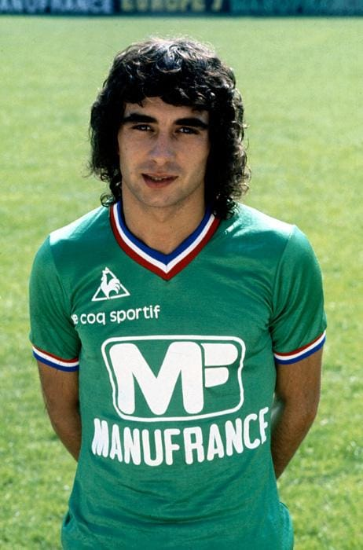
Dominique Rocheteau, héros des supporters et symbole du club (Source : archives nationales).
Michel Platini et le titre de 1981
Lors du dernier titre de champion remporté par l’ASSE en 1981, Michel Platini affirma : "Ici, on joue pour une histoire, pas seulement pour des points."
Cette phrase résume parfaitement l’attachement des joueurs à l’héritage du club.
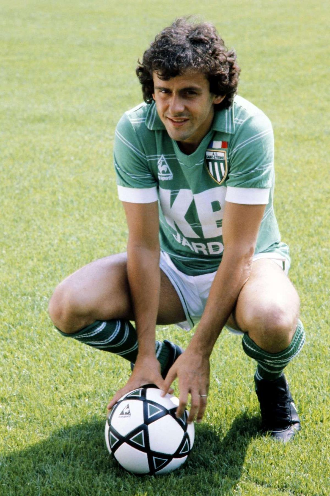
Michel Platini, architecte du titre de 1981 (Source : archives locales).
Les supporters et le "Chaudron"
Le stade Geoffroy-Guichard, surnommé le "Chaudron", est réputé pour son ambiance unique. Un supporter déclarait en 2010 :
"Entrer ici, c’est sentir l’âme des Verts, entendre le battement de cœur d’un peuple." Ce lien indéfectible entre les supporters et le stade symbolise l’esprit de l’ASSE.
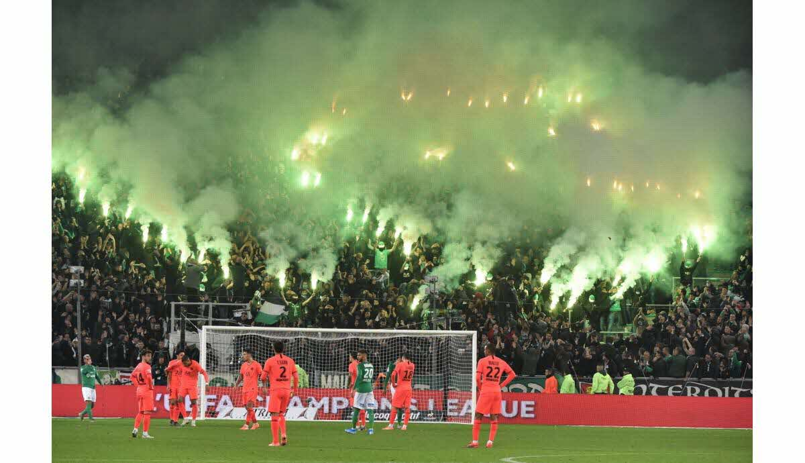
Le Chaudron, lieu de communion entre les joueurs et les supporters (Source : archives ASSE).
Hommages du club et de ses supporters
Les légendes de l’ASSE continuent d’être célébrées par le club et ses supporters à travers des cérémonies, des tifos impressionnants, et des initiatives spéciales. Ces hommages perpétuent la mémoire des figures qui ont marqué l’histoire des "Verts".
Les cérémonies au stade Geoffroy-Guichard
Le club organise régulièrement des cérémonies au stade Geoffroy-Guichard pour honorer ses joueurs et entraîneurs légendaires.
En 2020, un hommage vibrant est rendu à Robert Herbin, surnommé "Le Sphinx", après son décès, avec un tifo géant et une minute d’applaudissements.
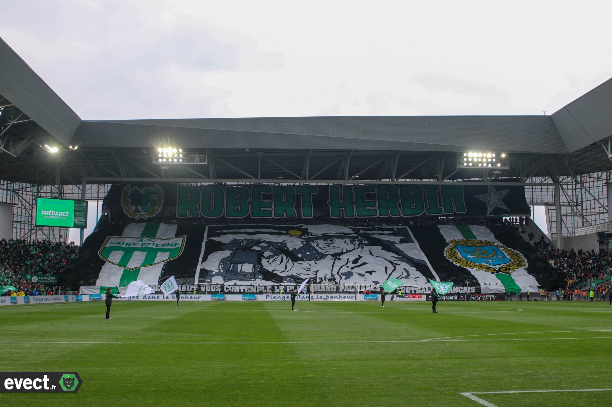
Un tifo géant en hommage à Robert Herbin au Chaudron (Source : archives ASSE).
Les tifos des supporters
Les supporters de l’ASSE sont connus pour leur créativité et leur passion. À chaque match important, le Chaudron s’illumine de tifos spectaculaires.
En 2013, un tifo géant célèbre la victoire en Coupe de la Ligue, marquant le retour du club au sommet.
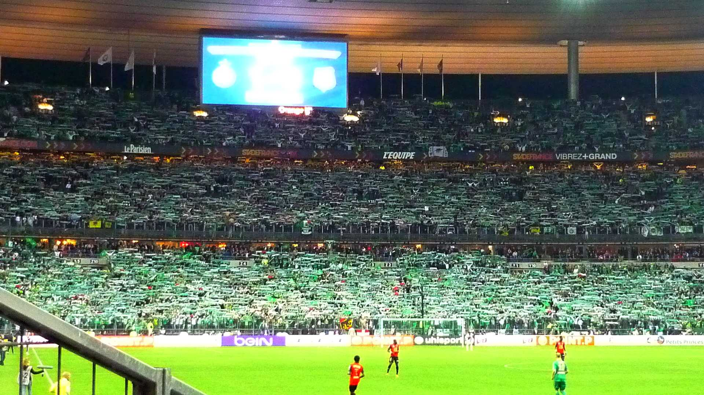
Les supporters célèbrent la victoire en Coupe de la Ligue 2013 avec un tifo géant (Source : archives locales).
Les maillots spéciaux
Le club a également lancé des maillots spéciaux en hommage à ses figures emblématiques. En 2019, un maillot collector est créé pour célébrer
les 40 ans de l’épopée européenne de 1976, rendant hommage aux "poteaux carrés" et aux joueurs de cette époque.
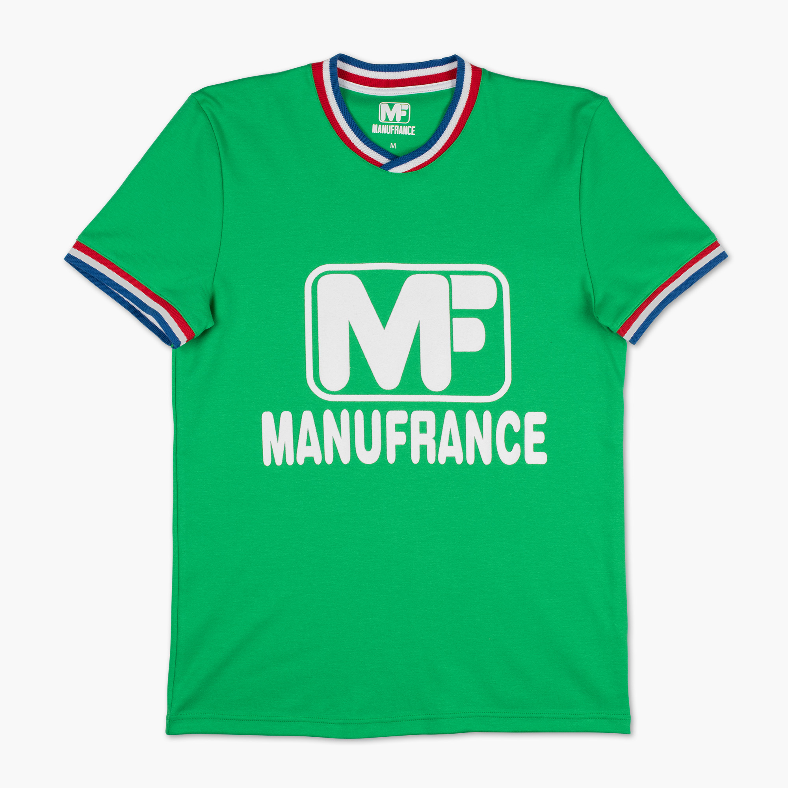
Un maillot spécial pour célébrer l’épopée européenne de 1976 (Source : archives nationales).
Les statues et plaques commémoratives
Le club a inauguré des statues et des plaques commémoratives pour honorer ses légendes. Une statue de Rachid Mekhloufi, joueur emblématique des années 1950,
trône fièrement à l’entrée du stade, rappelant l’héritage du club.
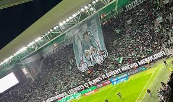
Statue de Rachid Mekhloufi, un hommage durable à une légende (Source : collections locales).
Les chants des supporters
Enfin, les chants des supporters perpétuent la mémoire des grandes figures du club. Des hymnes comme "Qui c’est les plus forts ? Évidemment c’est les Verts !"
résonnent dans le Chaudron, rappelant les exploits passés et l’amour des fans pour leurs héros.
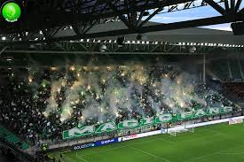
Les supporters chantant pour les légendes de l’ASSE dans le Chaudron (Source : archives ASSE).